格物致知(1)——你什么进制？我什么进制？
在我入坑之前就时长听大佬说：计算机的世界是二进制的，所有的信息都用0和1来表达。这对习惯于使用十进制的人脑来说显得捉摸不透：为什么要用二进制，十进制不香吗？另外啥叫信息？计算机为啥要表达？它要表达啥？不知道年轻的你有没有此等困惑，今天就让我们来揭开遮掩的幕布，看破这背后的戏法与魔术。
你什么进制？我什么进制？
在研究计算机为什么是二进制之前，我们先抛开先入为主的偏见，思考一下：为什么人脑习惯用十进制，阿拉伯数字为啥用10当做基数来设计？这个问题很简单，掰掰我们的手指，数一数一共有几根，答案也就呼之欲出了。得益于我们的手指数量，最早的计数方式便选择10作为基数，而随着智慧的启蒙与时代的发展，阿拉伯人设计出以10作为基数的阿拉伯数字，推动了数字革命，终而家喻户晓、流传沿用至今。幼儿园老师教我们加减法运算时，其核心就在于凑10，当我们掌握了凑10技巧以后（也就是明白了进制的意义），就可以口算相当大规模的数字加减运算了。
而在计算机的世界则流行的是一种二进制运算，为什么是2而不是10呢，这是因为二值信号更容易被表示、传输和存储，2这个数字很有power，他可以表示两种极端对立的特性，比如：有和无、阴与阳、光与暗、高和低、顺时针和逆时针等等。对二值信号进行存储和计算的电子线路简单可靠、易于设计，制造商可以在一个单独的硅片上集成数百万乃至数十亿个这样的电路。
正所谓太极生两仪、两仪生四象、四象生八卦，单个二值信息本身作用有限，但是当把多个二值信息排成队、通过排列组合就可以一生万物，正如我们在第零讲中反复提到的核心思想：对抽象的事物赋予特定的语义。对连续二值信息的排列组合可以让我们对任何有限集合赋予语义，比如字符编码、CPU指令，再比如今天要讲的主角：数值信息的表达与存储。
初识二进制
二进制运算法则和十进制没什么区别，不过是逢2进位罢了，这里介绍一个简单的口算进制转换技巧：我们按照从低到高，记住一连串的二进制位为1的实际值，比如B11111111从低位到高位分别是1、2、4、8、16、32、64、128，当我们有一个十进制数为69，想要转换成二进制来表示的话，就用这些数字来凑：\(69=64+4+1\)，亦即第0、2、6位为1（计算机的世界下标往往从0开始），其余位为0，最终写成B01000101。这里的前缀B表示二进制，是英文binary首字母的缩写。
你可能还见过其他的二进制表示法，不同语言的写法可能不同，比如python里是用0b作为前缀，但这些都不重要，他只是为了区分其他进制而携带的标记，我们只需要知道它表示二进制就行。
好，看到这里相信你已经学会怎么口算了，那么留一个问题给读者：250用二进制表示要怎么写呢？
超量召唤：十六进制
有的同学可能注意到，为啥69的二进制最高位在第6位，我却在最高位前面补了个0凑成8位呢？这是因为大多数计算机存储的最小单元是字节(Byte)，一个字节=8个位(bit)，常常写作1B(yte)
=
8b(its)，故而常常以8作为分组。因此，一个字节表达的范围就是B00000000~B11111111，换算到十进制就是0~255，由于使用二进制书写显得格外不方便，大家就对2进行了折叠，选择2^4=16来作为基数（二进制的怪兽有四只，要上了，欧巴类、xyz召唤：十六进制），用十六进制来表示（使用数字0~9,A~F来表示每个位值，也就是从0到15，其中A~F大小写均可）。如此，一个字节就只需要两个十六进制数来表示，大大缩减了书写长度，此时值域区间为0x00~0xFF（这里的0x是用户表示十六进制的前缀，可能还有0xFFH、FFH的写法，H是十六进制——Hex的缩写）。
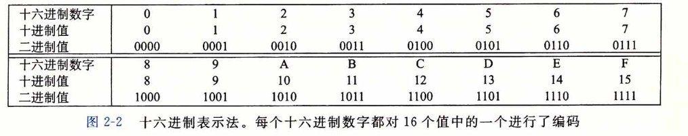
所以十六进制只是二进制的折叠，本质上没有什么区别，那么十六进制怎么口算呢？很简单，我们通过展开十六进制数、转成二进制格式，在此前二进制口算窍门的基础上，再做一层映射即可：
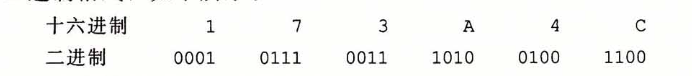
让我们来试试：十进制的250，对应的十六进制数怎么表示呢？首先我们把250拆分成：\(128+64+32+16+8+2\)，也就是对第1、3、4、5、6、7位置1、其余置0，二进制写作B11111010，进一步，每4位做一下折叠，最终得到：0xFB。
当然了，在我们熟悉十六进制数字之后，可以跳过二进制转换这一层，直接使用十六进制数来口算：比如250=15*16+10，15就是F、10就是B，也可以得到0xFB的结果。
实际上我们只需要掌握十六进制数的阅读方法即可，如果口算不是为了装B，那就毫无意义(doge）。
数值类型与尺寸
我们上中学的时候，对数字的划分一般都是采用自然数、实数、复数等概念来进行划分，但在计算机的世界，划分规则却迥然不同。各大编程语言往往都会定义各种各样的数据类型，它们作用不同、长短不一，但总体而言，数值在大分类上可以被归类成这两种：整型数和浮点型数。在这两大类的基础上，编程语言一般会在设计上根据尺寸长短（也就是确定数值范围、即多少个字节），将整型和浮点型细分成多种类型。另一方面，由于数值有正负之分，为了便于日常开发者的使用，在一些编程语言里还对每一种类型再进一步拆分成有符号和无符号型（比如C、C++）。
整型数就是整数，不管他的尺寸有多大，哪怕你定义成64个字节的超大范围，它能表示的数值也仅限于整数。比如我们定义一个uint8_t的类型，长度为1个字节，那么它所能表示的数值范围就是0~255，假如我们想让这个范围能表示负数，那么不妨再设计一个sint8_t型，长度依然是1个字节，此时数值范围就是-128~127。对于无符号数来说，如何使用单字节来存储0~255显得非常直接，0就存储为0x00、1就存储为0x01、240就存储为0xF0、255就存储为0xFF，这和十六进制表示数值的设计是完全统一的，我们姑且也把这叫做一种编码（尽管这层转换什么都没做）。但是负数要怎么存储呢？目前并没有一个单独的信息位来告诉我们这个数是positive还是negative呀。
麻烦的符号
看来简单的一比一编码行不通，一旦涉及了正负的概念，还是得考虑编码规则。考虑到正负本身无非也是一种信息，且恰好就是个二值信息，所以如果我们在原有尺寸的基础上，让出最高位、作为正负符号的表示，其余位仍然代表数值，看起来就可以解决这个case。比如对于此前我们设计的sint8_t，它一共有8个bits，我们让最高位（第7位）为0时代表正、为1时代表负，那么它所能表示的范围就变成了-127~127。此时B11111111在作为sint8_t的时候，它的值就是-127，而作为uint8_t时，它的值是255。
这种简单粗暴的设计看起来很美好，但实际上却经不起推敲：比如我们考虑对-4和+8做加法运算，二进制写作B10000100和B00001000，正常的结果应该是+4，当计算机操作二进制数按位计算时，答案却是错误的B10001100，也就是-12：
1 | |
经过分析，我们发现这里第一个问题就在于符号位是不能直接进行加法运算的，因为我们在计算时并不知道最终结果应该是正还是负。此外，第二个问题在于正数和负数的加法运算，其实相当于是减法，这里的计算逻辑实际上忽略了这一事实，而是进行简单的4+8，所以最终才得出了-12的结果。
尽管我们经过分析，或许能够梳理出一套正确计算的逻辑，但从计算机来说，这就显得太过于复杂了，对于计算机来说，它只能做加法运算，至于你这些数字的背后代表了哪些数值，它是丝毫不关心的。因此，我们需要精心设计一个编码机制，使得它能够在计算机的世界对正负数的加减法操作（计算机只能做加法，减法也是加法（与负数相加））得到一个正确结果的相应编码值。
整型数编码
无符号数
对于无符号数来说，完全可以沿用最自然的编码规则：
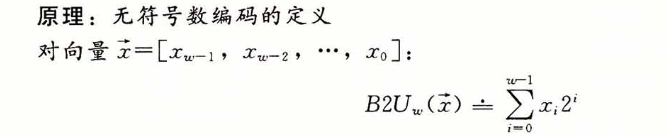
长度为w的0、1串映射到无符号整数，比如：
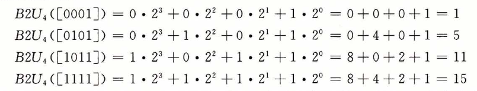
显得既直观又简单。由于无符号数不涉及减法，也没有符号，所以计算机的加法运算无论对于哪两个数操作，结果都是正确的。
有符号数
而对于有符号数，最常见的一种编码方式叫做补码(two's complement)。在这个定义中，将字的最高有效位解释为负权(negative weight)，类似无符号数，使用函数来定义：
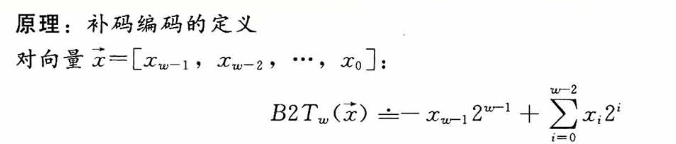
最高位\(-x_{w-1}\)也叫符号位，它的权重为\(-2^{w-1}\)，当该符号位为时表示负数（值为负），为0时表示整数（值为非负，也就是正数+0），这么说比较抽象，还是展开看看几个例子：

为什么要设计这个权重呢，实际上它是对减法运算的一种模拟，对于负数来说，它最终用于表达的二进制值是权重作用后的结果，如此，当我们对复数进行加法运算时，这个权重就发挥了作用。
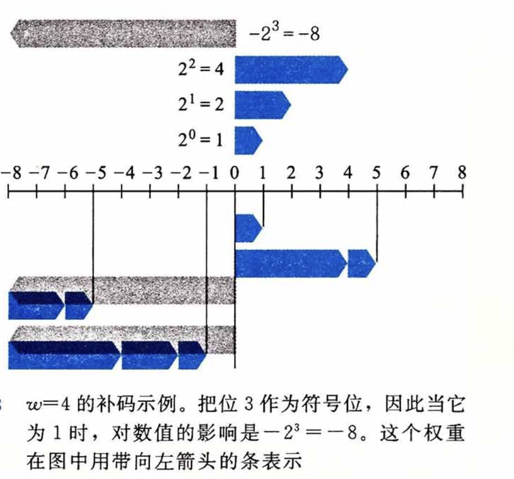
比如重新考虑-8+4，对sint8_t类型，-8的补码是B11111000，4的补码是B00000100，二者相加：
1 | |
通过计算机的加法运算后，得到的正好就是-4的补码。
再比如-4+8：-4的补码是B11111100，8的补码是B00001000，二者相加：
1 | |
由于尺寸限制，这里的加法运算产生了溢出，最终溢出位被丢弃，而最高位（符号位）刚好因为进位而变成0（语义上代表非负数），这一巧合实际上就是我们精心设计的补码编码规则而产生的。
补码、反码与原码
各版本大学计算机基础的教材往往都会提到这么几个概念，补码我们已经知道了，那么啥叫反码和原码呢？
反码和原码是另外两种表示有符号数的标准方法： 原码(Sign-Magnitude)：最高有效位是符号位，用来确定剩下的位应该取负权还是正权：
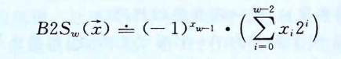
反码(Ones' Complement)：除了最高有效位的权是\(-(2^{w-1}-1)\)而不是\(-2^{w-1}\)，它和补码完全一样：
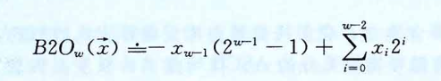
对于原码和反码来说，它们对数字0的编码都有两种：B00000000被解释成\(+0\)，在原码编码中B10000000被解释成\(-0\)、反码编码中B11111111被解释成\(-0\)。反码和原码相对于补码是截然不同的编码方式，只可惜大部分教科书混淆了三者之间的关系，从字面值上看，正数的补码和原码一致，而负数的补码则是“反码+1”（毕竟权重里多了个-1），这种取巧的办法更适合我们人类去计算有符号数的补码编码值，但实际上它们之间没什么关系，每种编码方式本身都是内部闭环的。所以坊间总流传这么一个说法：正数的补码是它的原码、负数的补码是它的反码+1。久而久之，我们只学会了怎么计算有符号数的补码编码值，却根本没搞懂补码的设计奥义，当真是买椟还珠。
虽然上古时代曾生产过基于反码表示的机器，但现代机器都一致使用补码来编码有符号数。
C语言中的数值类型
上面的sint8_t,
uint8_t是我杜撰的，我们找个真实的编程语言来举例。比如，在C语言中，有着以下的常见类型：
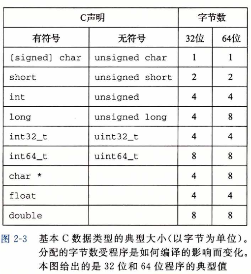
注意到C在设计上针对整型数分成了short、int、long、int32_t、int64_t这几种，它们的尺寸单调非递减，且在不同位数的机器架构里长度不同。char是一个比较特殊的类型，它只有单个字节，常用来表示ASCII字符，但本质上存储的只是个数字罢了，它具体是什么取决于你怎么用它。char这种设计放在现代来看显得小家子气（比如go直接定义byte型），这主要是因为C诞生年代太过久远，和现代编程语言的设计相当脱轨。
实际上x64（64位）机器也可以编译x86(32位)的C程序，此时类型尺寸按32位的标准生效。
有符号数和无符号数的转换
截止到目前，我们对有符号数和无符号数可以说是区别对待，可是在实际生产环境中，我们很可能会遇到两种类型数混用甚至需要进行计算的场合，那怎么办呢？大部分区分了符号数的语言往往都提供了它们之间的转换方法，比如在C语言中就有显式强制类型转换和隐式类型转换这两种。然而语言层面往往只是提供能力，二者进行计算最终得到的值，归根结底取决于你对它的解读方式。
举个例子，比如下面的C代码：
1 | |
使用x86-64 gcc
13.1编译，最终输出的结果是：v=-12345, uv=53191。为什么uv的值是53191而不是直觉上的12345呢？这就是因为-12345底层存储的值是B1100111111000111，采用的是补码存储，而当我们把他看做是一个无符号数时，它的编码解读方式就发生了变化，最高位的符号位不再代表符号位，而是代表了\(2^15\)这个值，不妨按照无符号数的编码方式计算一下，就会发现B1100111111000111对应的值正是\(2^{15}+2^{14}+2^{11}+2^{10}+2^9+2^8+2^7+2^6+2^2+2^1+2^0=53191\)。
因此，对于上一段C代码来说，unsigned short uv = (unsigned short)v只不过是使用强制类型转换将v底层存储的编码值赋值给了uv，仅此而已。实际上，我们将上面的代码改写一下，完全不需要copy一份v，只需要对v使用不同的format来打印，亦会得到相同的结果：
1 | |
对于大多数语言的无符号和有符号数类型的转换，原则都和C一样：数值可能会变，但是位模式不变。因此，当开发者对有符号数和无符号数进行混淆计算时，一定要确保非预期的结果产出，对于大部分语言来说，这都是一个存在风险且不推荐的操作。
扩展与截断
另一个常见的转换场景是不同字长的整数之间进行转换。我们原则上希望这样的转换可以保持原有数值的不变，这对于扩展来说（也就是从小尺寸转成大尺寸），可以通过设置扩展的规则来保证，但对于截断来说，显然是不可能的（你那点空间容不下人家的熵）。
对于无符号的扩展来说，只需要在扩展的高位全部填0即可，这一法则被称作无符号数的零扩展，其原理直接遵循了无符号数编码的定义。而对于有符号数来说，补码需要执行符号扩展：高位填充最高有效位的值，简单来说，就是负数用1填充，非负数用0填充。
我们还是以C语言为例，将上面的代码做一下调整：
1 | |
输出结果如下：
1 | |
扩展的规则易于理解，那么怎么截断呢？既然截断可能会导致原始数值的丢失，所以我们也不用有那么多顾忌，不管是无符号数还是有符号数的补码，我们都干脆把高位丢弃就行。
1 | |
所以截断这个操作在编程时也是个高度危险的操作，这很可能会因为熵信息丢失导致出现非预期的问题，甚至会产生一些可被黑客利用的漏洞。
纵观历史长河，因类型转换、扩展截断而导致的漏洞数不胜数，比如CSAPP在2.2.8的旁注中给出了一个经典的开源系统FreeBSD getpeername的设计缺陷案例。早期的语言设计诸如C/C++对类型的分类和处理比较宽松，想要写出bugfree的代码需要开发者有较深的理解且务必仔细，这种环境天然助长了大量漏洞的滋生，这也间接导致此后数十年间、二进制安全的世界精彩纷呈，各种漏洞利用手法叹为观止。
既然无符号数和有符号数之间混用势必产生一地鸡毛，所以一些编程语言在设计时移除了对无符号数的支持，比如Java仅支持有符号整数，大刀阔斧，魄力相当。
整型数运算
加法与减法
由于尺寸固定的整型数类型范围受限，所以当进行加法操作时，会遇到一种在计算机世界中非常常见的现象：溢出(Overflow)。对于无符号来说，这一点显而易见，我们依然使用C语言来做测试，使用unsigned short来溢出一下：
1 | |
对于有符号数来说，其实也没什么不同，计算机依然是墨守成规的对每个位进行相加，按需进位：
1 | |
减法相当于是对负数做加法，而加法运算也同样是老老实实的按位操作，在中央处理器眼里从来都没有什么符号位，更没有什么负权。我们可以发现一个规律，向上溢出（正溢出）和向下溢出（负溢出）形成了一个周期环，所有的值都在\(-2^w~2^{w-1}\)之间反复横跳、周而复始。
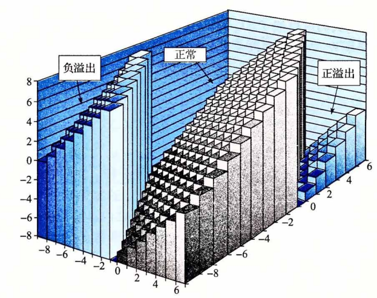
乘法与除法
我们知道乘法实际上就是多次的加法运算，尽管自近现代以来，流行处理器都支持独立的乘法指令（如Intel x86系列的MUL,IMUL），然而这些乘法指令相当慢，相比于其他整数运算指令诸如：加法、减法、位运算(与、或、非、异或)、移位，要花费数十倍以上的时钟周期。现代编译器在编译程序时往往都会对乘法运算进行优化，其核心思想就是利用位移指令+加减法指令配合完成原本的乘法运算，取代费时费力的乘法指令。
这里的优化是编译器针对于变量x常量的case，变量x变量由于无法提前预知两个值中的任意一个，所以只能使用乘法指令IMUL,MUL。而常量*常量则在编译期就已经可以计算出结果了，根本不经过CPU做runtime的乘法计算。
首先我们得前置介绍一些位移指令，位移指令其实很简单，它分为左移和右移：前者就是将每个二进制位都想左侧的高位移动K位，低位用0补齐；而后者则相反，将每个二进制位都向右移动K位，低位丢弃、至于最高位嘛，则分两种情况，一种叫逻辑右移、另一种叫算数右移，逻辑右移很简单，就是在高位补K个0，但算数右移则根据最高位进行补齐，也就是说，如果右移前，最高位是1，那么就用1来补齐位移后的最高K个位。
可别小瞧这位移指令，举个例子，我们对B0001(十进制等于1)进行左移操作，移动2位，结果就是B0100（十进制等于4），其效果相当于是乘以2的某个幂数，移动K位，就是乘以\(2^k\)。聪明的编译器根据一些数学上的技巧可以把复杂的与2的幂数对不齐的乘法转换为某个K位左移操作，进而再通过加减法进行补足。比如语句n = num * 63;的x86汇编指令可能是这样的：
1 | |
考虑到这一技巧较为复杂，且和入门二进制关系不大，我们暂且按下不表，留待日后研讨。
除法相比乘法更加复杂、执行速度也更慢，类似乘法的左移优化，除法也有围绕2的幂数通过右移来加速的技巧。
浮点数
浮点数就是我们平时经常说的小数，这类数有个比较明显的特点：有效位数可能相当之多，即使在日常生活中，我们计算小数时，也大都选择保留小数点后有限的几位，采用四舍五入或者干脆进一的方法。在计算机的世界也类似，比起数字精准度来说，制造商更care运算的速度，但相比我们日常的计算，各种浮点数的标准还是有着相对较高的要求。
小数的十进制表示法可以写成如下形式：\(d_md_{m-1}...d_1d_0.d_{-1}d_{-2}...d_{-n}\)，每个十进制数\(d_i\)的取值范围是\(0\sim9\)，d可以按如下定义：
\[ d = \sum_{i=-n}^{m}10^i \times d_i \]
小数点左边的数字的权是10的正幂，右边的则是负幂，例如\(12.34\)可以表示为\(1 \times 10^1 + 2 \times 10^0 + 3 \times 10^{-1} + 4 \times 10^{-2} = 12\tfrac{34}{100}\)。
二进制表示法则与十进制类似，我们以2作为基底，可以写成：
\[ b = \sum_{i=-n}^{m}2^i \times b_i \]
此时\(.\)也是二进制的点，左边的位的权是2的正幂，右边位的权是2的负幂。例如，\(101.11_2\)可以表示为：\(1 \times 2^2 + 0 \times 2^1 + 1 \times 2^0 + 1 \times 2^{-1} + 1 \times 2^{-2} = 4 + 0 + 1 + \frac{1}{2} + \frac{1}{4} = 5\tfrac{3}{4}\)。
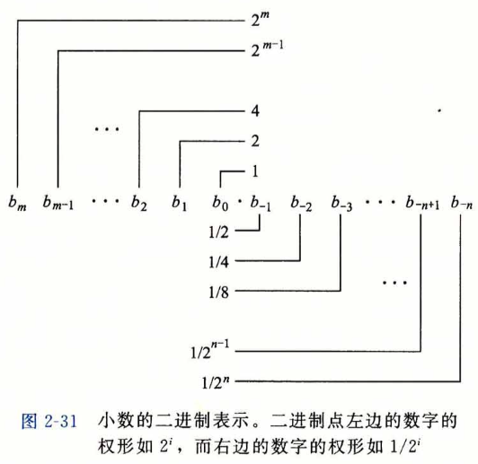
如果我们仅考虑受限长度的编码，那么对十进制表示法来说，像是\(\frac{1}{3}\)和\(\frac{5}{7}\)这样的数是无法精确表示的，同样的，对于二进制表示法来说，我们能够精确表示的只有那些能够被写成\(x \times 2^y\)的数，其他值只能近似表示，我们唯一能做的就是尽量增加二进制表示的长度，长度越长，能够表达的精度就越高。
目前最流行的浮点数标准是IEEE(电气和电子工程师协会)制定的，它规定了浮点数中每个数字要如何表示和舍入的规范，相对于整型数的编码规范来说，浮点数的编码法则相当晦涩难懂，但其核心设计原理就在于用\(V=(-1)^s \times M \times 2^E\)来编码表示一个浮点数，通过将bits分成符号位、阶码和尾数三段来确定其中s,M和E的值（有各自的计算法则），与前文的表示法呼应起来了。
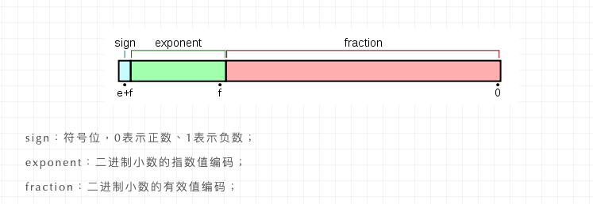
不过好在浮点数的编码对于绝大部分程序开发者来说并不是必要的知识储备，因此对于想要入门编程的同学，我们就暂止于此。
对于现代处理器来说，浮点数运算一般有自己的指令集，通过集成到CPU的一种叫做浮点运算器FPU的处理单元来计算。FPU对浮点数的运算做了一些特化设计，不仅支持复杂的运算指令，还可以加速运算过程。当然，也不是说没有FPU就算不了浮点数，这就好比你没有GPU一样能打开显示器一样。
by 玉涵，完稿于2023年5月16日夜